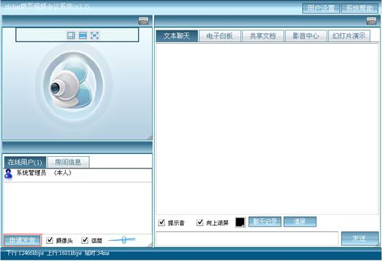
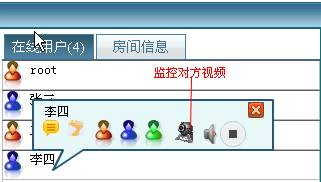

Zlchat 视频会议用户手册
V2.2
第一章 zlchat安装和卸载
1.1安装zlchat
1.解压到c:\
2.运行install.bat
1.2启动和停止zlchat
1.zlchat默认是以系统服务的方式启动，你可以在系统服务中启动或者停止zlchat系统服务
安装成功后，zlchat会在你的电脑系统服务中添加apache_pn,mysql_pn,zlchat-server三项系统服务
2.你也可以dos终端方式启动zlchat,删除zlchat系统服务的命令在C:\zlchat_web\zlchat-server-2\wrapper目录中,删除zlchat系统服务后，运行C:\zlchat_web\zlchat-server-2\zlchat-server-start.exe就可以启动zlchat
1.3 卸载zlchat
1．运行C:\zlchat_web\uninstall.bat删除zlchat系统服务
2．删除C:\zlchat_web\目录
第二章 zlchat入门
2.1 新建会议室
2.2 如何进入会议室
2.3 申请发言
进入zlchat视频会议后，点击左下角的申请发言，你的视频就会出现在左上角的视频窗口中。

2.4 私聊
鼠标点击你想私聊的用户，会弹出以下菜单
2.5 PPT演示
1.上传你要演示的ＰＰＴ文件，上传时间和你的网速有很大关系，上传好后ＰＰＴ就会出现在ＰＰＴ文件列表中

2.选中文件后，按确定键
2.6 电子白板
只有主持人和演讲者才可以操作电子白板，听众只能观看
2.7 共享文档
2.8 改变视频显示布局
2.9 如何节省带宽
在左下角你可以看到你现在连接到服务器的速度，如果你的网速比较慢，可以选择关闭视频，只保留语音
关闭对方视频，只保留语音
第三章 zlchat进阶
3.1 设置会议室参数
只有主持人才有设置房间属性的权限
视频帧大小
常见摄像头支持120*90,240*180,320*240,640*480 ,782*582,800*600在互联网上使用建议使用240*180,
在局域网使用的话，可以采用782*582或者800*600.
视频帧速率
目前市面上的摄像头支持1-25帧/秒，普通视频聊天1-10帧就可以了，如果
要采集电视卡上的信号，可以设置为25帧/秒.
图像质量
数字越小，压缩比就越大，图像也就越差，带宽占用也越小，当设置为100时，
图像不压缩。（不建议设置为100,这样的话占用的带宽非常大）
音频采样率
目前flash player支持5,8,11,22,44 五种采样率，数字越大，音质越好，占用的带宽也就越大，语音聊天一般设置为5,8,11三种就可以了，如果要播放音乐的话，可以设置为22或者44;
静音阀值
低于这个值的声音将不被传输，可以避免传输一些噪音，节省带宽。
锁定房间
主持人选择锁定房间以后，普通听众和演进者不能再进入房间，主持人不受限制。
同步主持人的界面
主持人选择“同步主持人界面以后”,其它用户的界面将会和主持人同步，比如主持人现在切换到白板，其它用户也会切换到白板。
审批发言请求
选定这个以后，普通用户提出发言请求以后，不能马上打开摄像头。要等主持人批准以后再可以打开摄像头。
同时视频数量
最大同时允许开视频语音的人数，目前最多支持同时开16个人。
3.2 踢人
只有主持人才有路踢人的权限
3.3 监控参会人员的视频
监控参会人员视频有两种方式
1.监控单个人的视频

2．监控所以人的视频
3.4 审批发言请求
当主持人在“房间设置”里面设置当前房间为审批发言模式时，用户申请发言后，不能马上发布他的视频，主持人同意后才可以发布他的视频
3.5 改变参会人员的角色
只有主持人才可以改变别的参会人员的角色
3.6 录制发言人的视频
只有主持人才可以录制发言人的视频，录制好后，视频会出现在影音中心